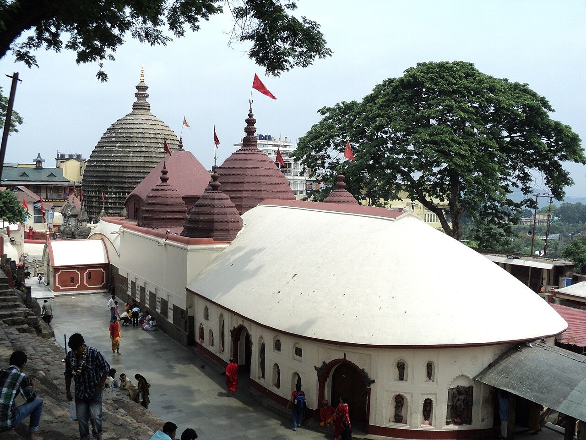
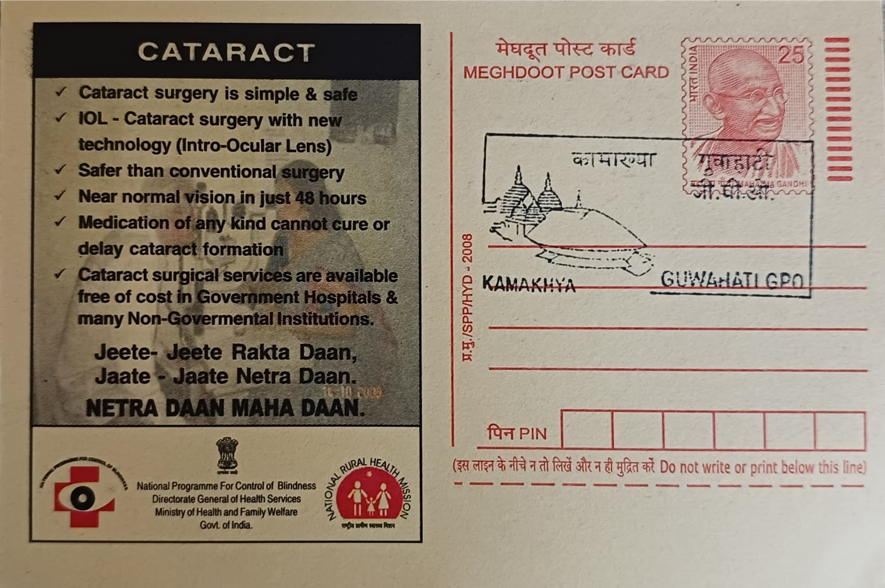

Kamakhya takes its name from the goddess regarded in Shakta tradition as a form of Kamakhya Devi, the deity of desire and fertility, and the temple's founding legend ties it to the dismemberment of Sati's corpse by Vishnu's discus, which scattered her body parts across the subcontinent and gave rise to the network of Shakti Peethas. Nilachal Hill is held to be the spot where her yoni, or womb and reproductive organs, fell to earth, and this origin story explains why the sanctum enshrines no carved image of the goddess but instead a natural stone fissure kept perpetually moist by an underground spring, worshipped directly as the source of generative power.
As one of the 51 Shakti Peethas recognised across India, Kamakhya occupies a distinct place within Hindu Shaktism as a seat of the goddess's reproductive and creative aspect rather than a shrine built around a sculpted deity. It is counted among the oldest and most significant Shakta pilgrimage centres in the country and functions as the principal temple of a wider sacred hill complex that, according to Archaeological Survey of India estimates, once held more than a hundred shrines, peethas and sacred ponds. The site is also singular as the only known complex where temples to all ten Mahavidyas of Tantric Shaktism are gathered together, with three of them, Tripura Sundari, Matangi and Kamala, enshrined within the main temple itself and the remaining seven in separate shrines across the hill.
Though traditions trace shrine activity on the hill to as early as the 8th or 9th century, the structure seen today results from a reconstruction undertaken in 1565 by the Koch king Naranarayan after an earlier temple had been destroyed during invasions of the region, with his brother and military commander Chilarai overseeing much of the building work. The rebuilding introduced the beehive-shaped shikhara characteristic of Assam's Nilachal style, a form that later Ahom-era renovations and additions continued to shape, blending older architectural remnants with newer Assamese craftsmanship into the hybrid temple visible on the hill today.
The temple's best-known observance, the Ambubachi Mela held each June during the monsoon, commemorates the goddess's annual menstrual cycle; the sanctum is closed to the public for roughly three to four days, after which it reopens amid large-scale celebration. The festival draws hundreds of thousands of devotees, tantric practitioners and ascetics from across India, many of whom camp on the hillside for its duration, making it one of the largest Tantric gatherings in the country and a defining fixture of Guwahati's religious calendar.
Administration of the temple today rests with a hereditary body of priests known as the Kamakhya Devalaya Committee alongside state temple trust arrangements, which coordinate the daily rituals, the animal sacrifices traditionally offered at the shrine, and the logistics of crowd management during the Ambubachi period. The Assam government and Guwahati civic authorities have also invested in ropeway access, road improvements and crowd-control infrastructure on Nilachal Hill to handle the continuous flow of visitors across the year. Between its daily stream of pilgrims and its periodic influx of festival crowds, the temple now operates as much as a major tourism and infrastructure undertaking for the state as it does as a living centre of Tantric worship.
| Date of Introduction | September 27, 2007 |
|---|---|
| Address | Senior Postmaster, |
| Guwahati GPO, | |
| Kamrup Metropolitan (dt.), Assam - 781001. |